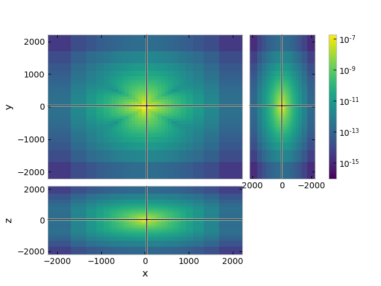
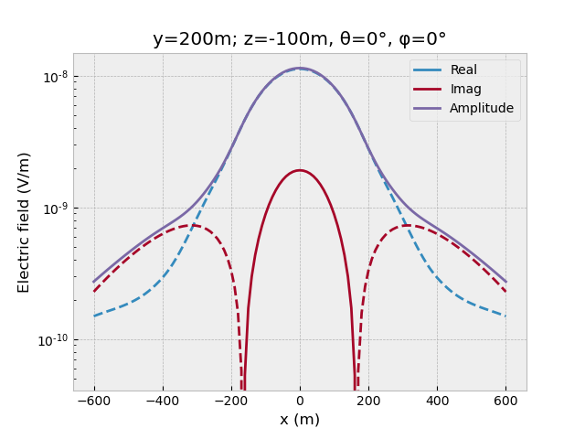
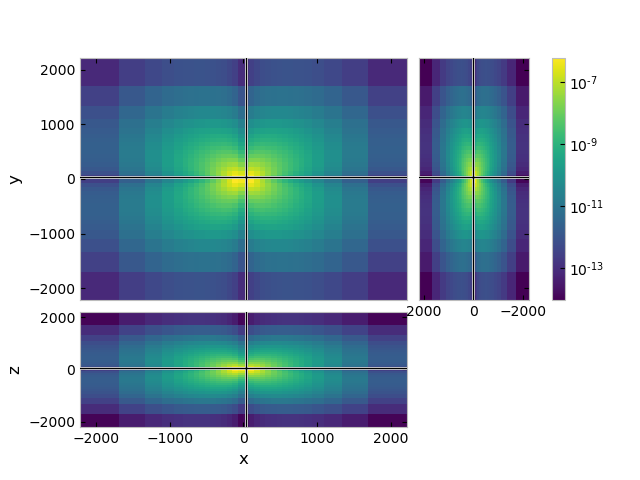
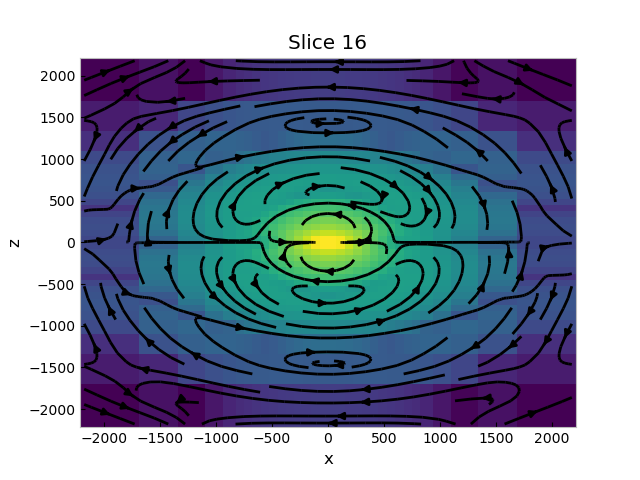

Note
Click here to download the full example code
01. Minimum working example#
This is a simple minimum working example to use the multigrid solver emg3d, along the lines of the one provided in the manual as “Basic Example”. To see some more realistic computations have a look at the other examples in this gallery. In particularly at 03. Simulation to see how to use emg3d for a complex survey with many sources and frequencies.
An absolutely minimal example, which only requires emg3d (with its hard
dependencies numba and scipy), is given here:
# ======================================================================= #
import emg3d
import numpy as np
# Create a simple grid, 64x64x64 cell, 100x100x100 m each.
hx = np.ones(64)*100
grid = emg3d.TensorMesh(h=[hx, hx, hx], origin=(-3200, -3200, -3200))
# Fullspace model with tri-axial resistivities (Ohm.m).
model = emg3d.Model(grid=grid, property_x=1.5, property_y=1.8,
property_z=3.3, mapping='Resistivity')
# The source is an x-directed, horizontal dipole at the origin.
source = emg3d.TxElectricDipole(coordinates=(4, 4, 4, 0, 0))
# Compute the electric signal for frequency = 10 Hz.
efield = emg3d.solve_source(model, source, frequency=10, verb=4)
# ======================================================================= #
However, above example is probably most useful on a server environment, where
you only want to solve the system, without any interaction. The example that
follows uses advanced tools of gridding including plotting, for which you need
to install additionally the packages discretize and matplotlib. Let’s
start by loading the required modules:
import emg3d
import numpy as np
import matplotlib.pyplot as plt
from matplotlib.colors import LogNorm
plt.style.use('bmh')
1.1 Survey#
First we define the survey parameters. The source is an x-directed, electric
dipole at the origin, of 1 A strength. Source coordinates for an electric
dipole can be either in a couple of different ways, see
emg3d.electrodes.TxElectricDipole.
# Define source coordinates.
src_coo = (0, 0, 0, 0, 0) # (x, y, z, azimuth, elevation)
# Frequency of the source.
frequency = 10
# Create source instance.
source = emg3d.TxElectricDipole(coordinates=src_coo)
source # QC
TxElectricDipole: 1.0 A;
center={0.0; 0.0; 0.0} m; θ=0.0°, φ=0.0°; l=1.0 m
1.2 Grid#
Now we have to define a grid. This is the most difficult step. A grid should be fine enough in order to resolve any relevant feature in the underground, and it should be fine enough around sources and receivers to not loose accuracy through the required interpolation. On the other hand, its boundary has to be far away to avoid effects from the boundary condition. And then it should need as few cells as possible for fast computation.
You can define your grid in any way that suits you, and there are better
grid-building tools than emg3d. However, emg3d does have some functionality
to help with this task, in particular emg3d.meshes.construct_mesh(). We
use it here without too much explanations, and refer to its documentation for
more details.
1.3 Model#
Next we have to build a model. What applies for the gridding applies as well for the model building: there are better tools out there than emg3d for this task (see, e.g., GemPy-I: Simple Fault Model).
However, building simple layered or block models is possible. Here we create a very simple fullspace resistivity model with \(\rho_x=1.5\,\Omega\,\rm{m}\), \(\rho_y=1.8\,\Omega\,\rm{m}\), and \(\rho_z=3.3\,\Omega\,\rm{m}\).
model = emg3d.Model(grid, property_x=1.5, property_y=1.8, property_z=3.3)
model # QC
Model: resistivity; triaxial; 32 x 32 x 32 (32,768)
The properties are here defined in terms of resistivity. Have a look at the example 02. Model property mapping to see how to define models in terms of conductivity or their logarithms.
1.4 Compute the electric field#
Finally, we can compute the electric field with emg3d for a certain
frequency, here for 10 Hz:
:: emg3d START :: 21:24:58 :: v1.8.0
MG-cycle : 'F' sslsolver : 'bicgstab'
semicoarsening : True [1 2 3] tol : 1e-06
linerelaxation : True [4 5 6] maxit : 50 (3)
nu_{i,1,c,2} : 0, 2, 1, 2 verb : 4
Original grid : 32 x 32 x 32 => 32,768 cells
Coarsest grid : 2 x 2 x 2 => 8 cells
Coarsest level : 4 ; 4 ; 4
[hh:mm:ss] rel. error solver MG l s
h_
2h_ \ /
4h_ \ /\ /
8h_ \ /\ / \ /
16h_ \/\/ \/ \/
[21:24:59] 1.932e-03 after 1 F-cycles 4 1
[21:25:00] 4.029e-05 after 2 F-cycles 5 2
[21:25:00] 6.003e-07 after 3 F-cycles 6 3
[21:25:00] 5.994e-07 after 1 bicgstab-cycles
> CONVERGED
> Solver steps : 1
> MG prec. steps : 3
> Final rel. error : 5.994e-07
:: emg3d END :: 21:25:00 :: runtime = 0:00:02
The computation requires in this case three multigrid F-cycles followed by one BiCGSTAB cycle, and takes just a few seconds. It was able to coarsen in each dimension four times, where the input grid had 32,768 cells, and the coarsest grid had 8 cells. There are many options for the solver, and the best combination often depends on the problem to solve. More explanations can be found in the example 06. Parameter tests.
1.5 Plot the result#
If you have discretize and matplotlib installed we can now plot the
resulting fields, here the x-directed electric field.
grid.plot_3d_slicer(
efield.fx.ravel('F'), view='abs', v_type='Ex',
pcolor_opts={'norm': LogNorm()}
)

Let’s assume we have a receiver line, x-directed (azimuth=elevation=0) point receivers at y=200m, z=-100m, from x=-600 to 600 m. We can get the receiver responses directly from the electric field:
offs = np.arange(-60, 61)*10
y, z = 200, -100
azimuth, elevation = 0, 0
# Get receiver responses.
resp = efield.get_receiver((offs, y, z, azimuth, elevation))
# Plot.
fig, ax = plt.subplots()
ax.set_title(f"y={y}m; z={z}m, θ={azimuth}°, φ={elevation}°")
ax.plot(offs, resp.real, 'C0', label='Real')
ax.plot(offs, -resp.real, 'C0--')
ax.plot(offs, resp.imag, 'C1', label='Imag')
ax.plot(offs, -resp.imag, 'C1--')
ax.plot(offs, resp.amp(), 'C2', label='Amplitude')
ax.set_xlabel('x (m)')
ax.set_ylabel('Electric field (V/m)')
ax.legend()
ax.set_yscale('log')
fig.show()

1.6 Compute and plot the magnetic field#
We can also get the magnetic field and plot it (note that v_type='Fx'
now, not Ex, as the magnetic fields lives on the faces of the Yee grid):
hfield = emg3d.get_magnetic_field(model=model, efield=efield)
grid.plot_3d_slicer(
hfield.fx.ravel('F'), view='abs', v_type='Fx',
pcolor_opts={'norm': LogNorm()}
)

1.7 Plotting the field#
Using discretize for meshing has the advantage that we can use all the
implemented tools, such as plotting the field lines:
_ = grid.plot_slice(
grid.aveE2CCV * efield.field.real, # Cell-avg values of real component
normal='Y', v_type='CCv', view='vec',
pcolor_opts={'norm': LogNorm()},
)

Total running time of the script: ( 0 minutes 6.197 seconds)
Estimated memory usage: 77 MB